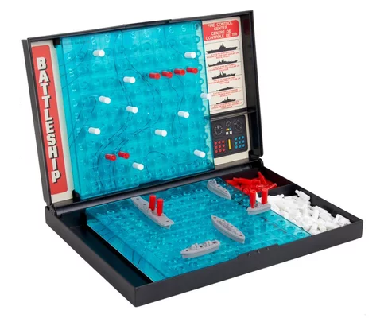

Une bataille navale est une bataille livrée en utilisant des navires ou d'autres engins flottants. La plupart des batailles navales ont eu lieu en mer, bien qu'un petit nombre ait eu lieu sur des lacs ou des rivières. La plus ancienne bataille navale dont on a gardé la trace fut livrée en -1210 près de l'île de Chypre. Quoique la nature des navires impliqués dans ces batailles ait fondamentalement changé, depuis les trirèmes jusqu'aux navires de ligne, sous-marins et porte-avions en passant par les navires à voile, la plupart des principes tactiques restent les mêmes, tels que l'importance de la manœuvre avant l'engagement en lui-même, et le fait qu'il est préférable de fuir le combat plutôt que de perdre une flotte entière.
Difficile de faire une présentation des jeux de société les plus connus sans évoquer la Bataille Navale. Egalement appelé jeu du "Touché, Coulé", le jeu de Bataille Navale est un jeu de société ayant vu le jour au début des années 1930. Il met en confrontation deux joueurs et celui qui fera couler tous les navires de la flotte adverse avant que l'autre partie ne le fasse en ressortira grand vainqueur. Comme les règles du jeu ne sont pas compliquées, la Bataille Navale peut très bien se jouer en famille et est facile à apprendre à un enfant ce qui explique son succès de par le monde. Pour en savoir plus sur ce jeu, suivez le guide.
Sources : Wikipédia - JouéClub